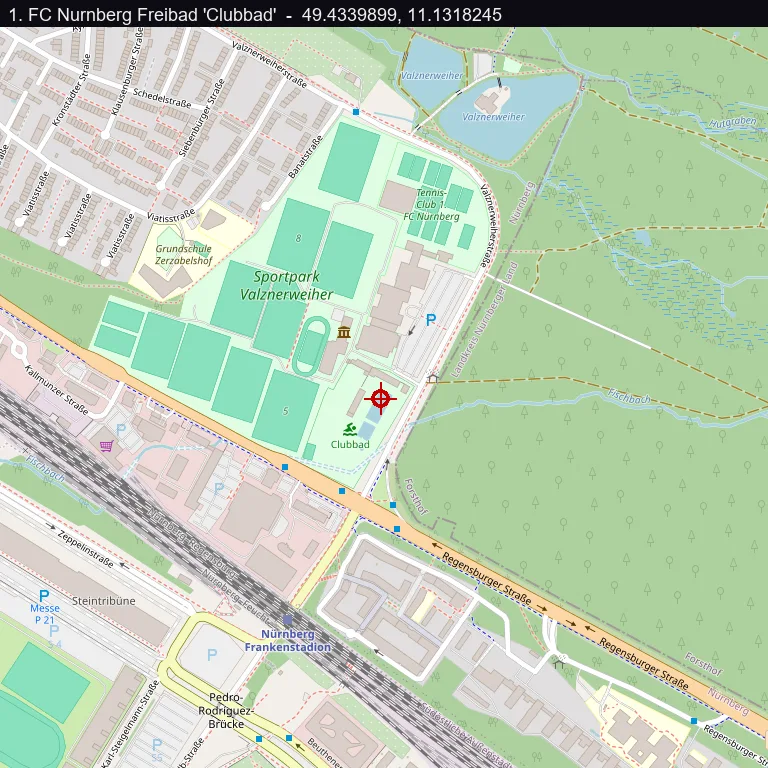

01Start point: identify the page
- What I found: a Leaflet map with a "Select a location" and "Submit location" flow. Clicking a point POSTs lat and lon to ?check=1, and the server replies {"ok":true,"message":"PINK{...}"} only for the right spot.
- What I found: the server gives no distance hint (just "Try harder!") and rate-limits, so guessing is out.
- Dead end: the embedded pannellum panorama pano.jpg is a decoy. It renders the CTF logo, and the 1.6 MB appended to it is high-entropy filler with no key.
- Thinking: when the server check is the win condition, the coordinates have to come from real-world research, not from the handout's noise.
02Pivot: identify the politician and the post
- What I did: matched "Bavarian politician who posts himself eating, dancing, playing football, swimming" to Markus Söder (CSU), famous for exactly these Instagram posts.
- Result: his early-August swim post is a selfie in an outdoor pool with the caption "Urlaubszeit in Bayern: Sommer, Sonne, Schwimmen. Macht den Kopf frei, erfrischt und hält fit."
- Thinking: the caption and the August date matched the challenge text, so this was the photo to geolocate.
03Pivot: geolocate the pool
- What I found: the photo shows an outdoor lane pool with red and white lane ropes, a tall conifer forest right behind it, and sun umbrellas.
- What I did: ran a reverse image search (Google Lens) on the selfie. It returned an exact match from the Instagram account @1.fcn_clubbad, the "Clubbad", the swimming pool of 1. FC Nürnberg (Söder is a well-known FCN fan).
- What I did: looked it up in Google Maps: "1. FCN Freibad Clubbad", Valznerweiherstraße 200, 90480 Nürnberg-Ost. The Maps photos match the selfie (same pool, lane ropes, forest backdrop).
- Result: coordinates 49.4339899, 11.1318245.

04Pivot: submit
- What I did: POSTed lat=49.4339899 and lon=11.1318245 to ?check=1.
- Result: the server answered {"ok":true, "message":"PINK{Söd3r_Sw33t_C4r0l1ne_0h_0h_0h}"}.